Brittany edition · Sentinel-2B · 19 July 2024
Explore a real Sentinel-2 Level-2A scene over the Paimpont area, spanning parts of departments 35 and 56. This chapter follows the supplied Rasters 2 sequence: import and organise the bands, crop a common study area, inspect and stretch contrast, then build four colour composites. Every result below was produced by executing the displayed R code.
Scene and numerical meaning
Scene S2B_T30UWU_20240719T111146_L2A, acquired on 19 July 2024, supplied through the Earth Search Collection-1 catalogue. The prepared inputs contain physical surface reflectance: the source scale and offset have already been applied once. The 24 × 20 km context and the central 16 × 12 km crop cover local parts of the two departments, not their complete territory. Source, radiometry and preparation notes.
Understand the spectral bands
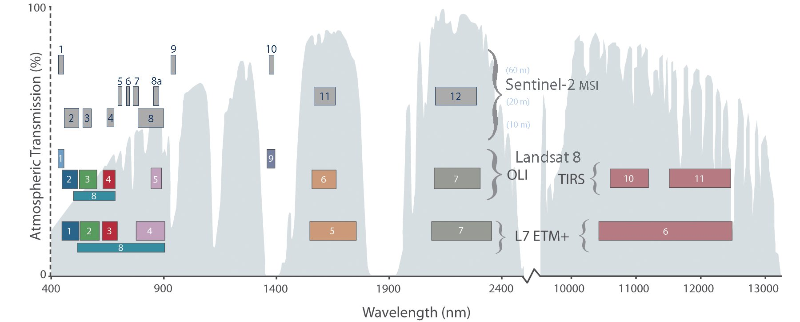
How to read this diagram
The horizontal axis is wavelength in nanometres; the grey background shows atmospheric transmission. Numbered rectangles locate the sensor bands, while the 10 m, 20 m and 60 m labels describe Sentinel-2 native spatial resolution. The axis break separates the visible-to-shortwave-infrared region from Landsat thermal bands: Sentinel-2 MSI has no thermal band. Band numbers from different sensors are not interchangeable, and Sentinel-2 B08 and B8A are distinct bands.
The table below identifies the ten bands used in this exercise and their prepared 20 m grid. The reference diagram shows more bands than this selected stack.
| Band | Spectral region | Centre wavelength (nm) | Native resolution | Prepared grid |
|---|---|---|---|---|
| B01 | coastal | 443 | 60 m | 20 m · bilinear |
| B02 | blue | 490 | 10 m | 20 m · area average |
| B03 | green | 560 | 10 m | 20 m · area average |
| B04 | red | 665 | 10 m | 20 m · area average |
| B05 | rededge | 704 | 20 m | 20 m · aligned native grid |
| B06 | rededge | 740 | 20 m | 20 m · aligned native grid |
| B07 | rededge | 783 | 20 m | 20 m · aligned native grid |
| B11 | swir16 | 1610 | 20 m | 20 m · aligned native grid |
| B12 | swir22 | 2190 | 20 m | 20 m · aligned native grid |
| B8A | nir08 | 865 | 20 m | 20 m · aligned native grid |
Complete R script · Band metadata · Physical-reflectance stack · Stretched display stack
Run the steps in order from the repository root. Install the packages once with install.packages(c("terra", "stringr")) (installation help). The prepared ten-band inputs and SCL layer are supplied in the accompanying data archive.
Locate the image within departments 35 and 56
Department contours: IGN-derived Contours administratifs 2026, ODbL. Red: prepared image context; blue: final crop. Basemaps require Internet; the R figures are saved locally.
7.1 · Import and organise the ten bands
Read the ten prepared spectral GeoTIFFs as a list, build a multilayer raster and extract the band names from the filenames. The scene-classification layer is kept separate.
R code
library(terra)
library(stringr)
sentinel_files <- list.files("data/rasters/sentinel2-35-56", pattern = "_B[0-9A]{2}\\.tif$", full.names = TRUE)
band_names <- str_extract(basename(sentinel_files), "B[0-9A]{2}")
expected <- c("B01", "B02", "B03", "B04", "B05", "B06", "B07", "B11", "B12", "B8A")
stopifnot(length(band_names) == 10, setequal(band_names, expected), !anyDuplicated(band_names))
sentinel_files <- sentinel_files[match(expected, band_names)]
tmp <- lapply(sentinel_files, rast)
stopifnot(all(vapply(tmp, function(x) compareGeom(x, tmp[[1]], stopOnError = FALSE), logical(1))))
sentinel <- rast(tmp)
names(sentinel) <- expected
print(names(sentinel))
print(sentinel)
print(read.csv("data/MODULE_07_BANDS.csv"))
plot(sentinel$B01, col = gray.colors(100, 0, 1), main = "B01: prepared surface reflectance")Why these functions? · official R help
all()— Require every geometry and export check to pass. In R:help("all", package = "base")anyDuplicated()— Reject duplicate band identifiers before stacking files. In R:help("anyDuplicated", package = "base")basename()— Remove directory components so filename matching is independent of the parent folder. In R:help("basename", package = "base")c()— Collect options, colours, labels and terrain-index names. In R:help("c", package = "base")compareGeom()— Verify that the reconstructed or exported grid matches the reference. In R:help("compareGeom", package = "terra")gray.colors()— Map simulated illumination to a grayscale from dark to light. In R:help("gray.colors", package = "grDevices")lapply()— Read every spectral file into a list of rasters. In R:help("lapply", package = "base")length()— Verify the number of spectral files. In R:help("length", package = "base")library()— Load terra for raster operations and stringr for filename matching. In R:help("library", package = "base")list.files()— Find only spectral-band GeoTIFFs, excluding the separate SCL quality layer. In R:help("list.files", package = "base")logical()— Declare one logical output for each alignment test. In R:help("logical", package = "base")match()— Order input files and assign RGB channels by explicit band name. In R:help("match", package = "base")names()— Select the individual terrain-index layers by name. In R:help("names", package = "base")plot()— Map reflectance, display intensity or labelled quality categories with the appropriate legend. In R:help("plot", package = "terra")print()— Display numerical output beneath the corresponding code. In R:help("print", package = "base")rast()— Read one physical-reflectance band or combine a list into a ten-layer raster. In R:help("rast", package = "terra")read.csv()— Display the native-resolution and wavelength metadata for the ten bands. In R:help("read.csv", package = "utils")setequal()— Check that the inputs contain exactly the ten expected band codes. In R:help("setequal", package = "base")stopifnot()— Stop execution if a grid or export verification fails. In R:help("stopifnot", package = "base")str_extract()— Extract the B01–B12/B8A band identifiers from each filename using a regular expression. In R:help("str_extract", package = "stringr")vapply()— Test grid alignment for every input raster with a declared logical result type. In R:help("vapply", package = "base")
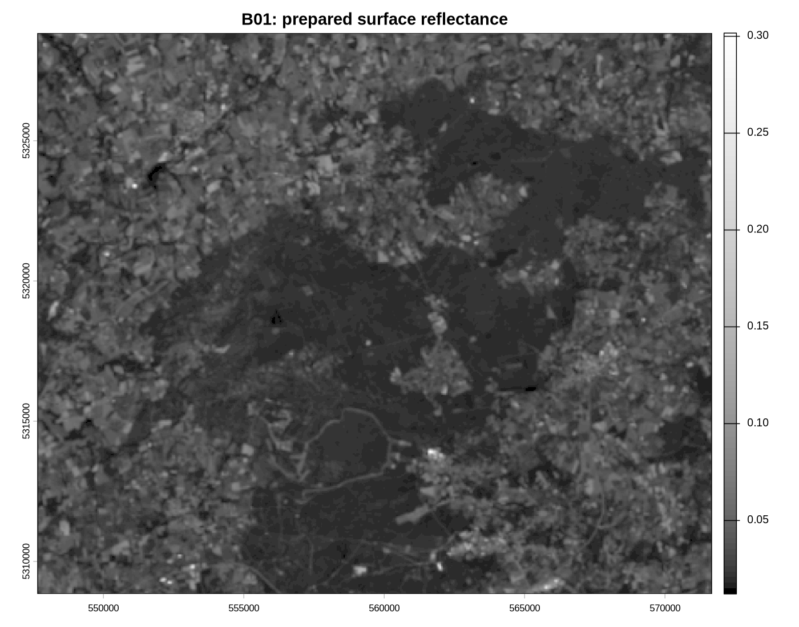
Executed R console output
[1] "B01" "B02" "B03" "B04" "B05" "B06" "B07" "B11" "B12" "B8A"
class : SpatRaster
size : 1000, 1200, 10 (nrow, ncol, nlyr)
resolution : 20, 20 (x, y)
extent : 547660, 571660, 5308840, 5328840 (xmin, xmax, ymin, ymax)
coord. ref. : WGS 84 / UTM zone 30N (EPSG:32630)
sources : sentinel2_B01.tif
sentinel2_B02.tif
sentinel2_B03.tif
... and 7 more sources
names : B01, B02, B03, B04, B05, B06, ...
min values : 0.0121, 0.01005, 0.009675, 0.007625, 0.0067, -0.0004, ...
max values : 0.333, 1.6028, 1.4958, 1.4634, 1.5978, 1.5728, ...
band spectral_name central_wavelength_nm native_resolution_m
1 B01 coastal 443 60
2 B02 blue 490 10
3 B03 green 560 10
4 B04 red 665 10
5 B05 rededge 704 20
6 B06 rededge 740 20
7 B07 rededge 783 20
8 B11 swir16 1610 20
9 B12 swir22 2190 20
10 B8A nir08 865 20
prepared_resolution_m preparation_method
1 20 bilinear
2 20 area average
3 20 area average
4 20 area average
5 20 aligned native grid
6 20 aligned native grid
7 20 aligned native grid
8 20 aligned native grid
9 20 aligned native grid
10 20 aligned native grid
There are ten bands, not simply bands 1 to 8: B11 and B12 are shortwave infrared bands and B8A is a narrow near-infrared band. The prepared files contain physical reflectance values with the source scale and offset already applied once. All are aligned to 20 m, but B01 originates at 60 m, B02/B03/B04 at 10 m, and the remaining selected bands at 20 m. Regridding B01 does not create 20 m information.
7.2 · Locate and crop a shared region in departments 35 and 56
The input context is 24 × 20 km around the Paimpont area. Define a central 16 × 12 km region, draw its outline and crop all ten bands together.
R code
dept <- project(vect("data/vectors/departments-35-56.gpkg"), crs(sentinel))
X0 <- 559660
Y0 <- 5318840
DX <- 8000
DY <- 6000
ext0 <- ext(X0 - DX, X0 + DX, Y0 - DY, Y0 + DY)
plot(sentinel$B01, col = gray.colors(100, 0, 1), main = "B01 context: crop window in red")
lines(dept, col = "#dd9b32", lwd = 1.5)
lines(ext0, col = "red", lwd = 2)
sentinel_roi <- crop(sentinel, ext0)
print(sentinel_roi)
plot(sentinel_roi$B01, col = gray.colors(100, 0, 1), main = "B01 after crop: reflectance")
lines(dept, col = "#dd9b32", lwd = 1.5)Why these functions? · official R help
crop()— Trim the raster to a rectangle aligned with its cells. In R:help("crop", package = "terra")crs()— Identify the CRS before interpreting cell dimensions or calculating terrain. In R:help("crs", package = "terra")ext()— Define or read a bounding rectangle in xmin, xmax, ymin, ymax order. In R:help("ext", package = "terra")gray.colors()— Map simulated illumination to a grayscale from dark to light. In R:help("gray.colors", package = "grDevices")lines()— Draw vector boundaries over a raster map. In R:help("lines", package = "terra")plot()— Map reflectance, display intensity or labelled quality categories with the appropriate legend. In R:help("plot", package = "terra")print()— Display numerical output beneath the corresponding code. In R:help("print", package = "base")project()— Transform the department boundaries into the image CRS without reprojecting the imagery. In R:help("project", package = "terra")vect()— Read the example boundary polygons. In R:help("vect", package = "terra")
Context and crop outline
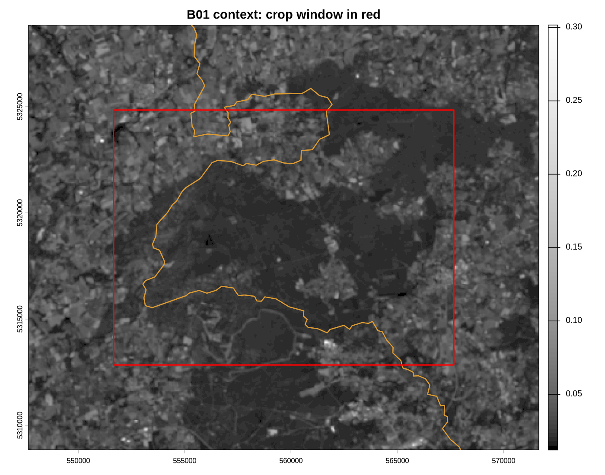
Cropped band
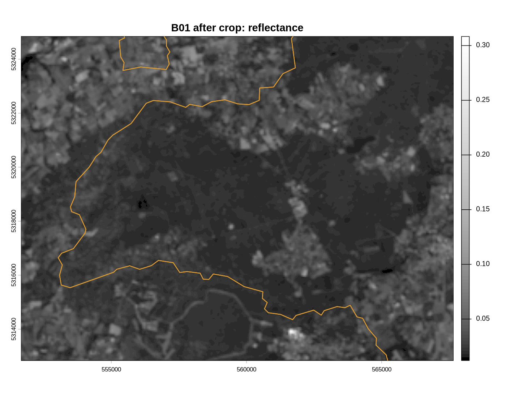
Executed R console output
class : SpatRaster size : 600, 800, 10 (nrow, ncol, nlyr) resolution : 20, 20 (x, y) extent : 551660, 567660, 5312840, 5324840 (xmin, xmax, ymin, ymax) coord. ref. : WGS 84 / UTM zone 30N (EPSG:32630) source(s) : memory names : B01, B02, B03, B04, B05, B06, ... min values : 0.0121, 0.011, 0.009675, 0.008475, 0.0068, 0.0028, ... max values : 0.3083, 1.14535, 0.85815, 0.6587, 0.6367, 0.6022, ...
DX and DY are half-widths, so the full crop is 16 km east–west and 12 km north–south. Coordinates are metres in WGS 84 / UTM zone 30N (EPSG:32630). The department contours are transformed to that CRS for overlay; the imagery is not reprojected. Orange outlines are department borders and the red outline is the crop rectangle. This is a local image crossing the two departments, not coverage of their entire area.
Preparation · Check scene classes before adjusting contrast
Use the Sentinel-2 scene classification layer (SCL) to exclude cloud, cirrus, cloud-shadow, snow, defective and missing pixels before computing display quantiles.
R code
scl <- crop(rast("data/rasters/sentinel2-35-56/sentinel2_SCL.tif"), ext0)
stopifnot(compareGeom(scl, sentinel_roi))
clear <- scl %in% c(2, 4, 5, 6, 7)
sentinel_clean <- mask(sentinel_roi, clear, maskvalues = 0)
print(freq(scl))
print(data.frame(retained_cells = global(clear, "sum", na.rm = TRUE)[1, 1], total_cells = ncell(clear)))
scl_display <- scl
levels(scl_display) <- data.frame(ID = 0:11, category = c("No data", "Defective", "Dark/topographic shadow",
"Cloud shadow", "Vegetation", "Not vegetated", "Water", "Unclassified",
"Medium-probability cloud", "High-probability cloud", "Cirrus", "Snow/ice"))
plot(scl_display, col = c("#ffffff", "#a80000", "#424242", "#705950", "#4c9b4b", "#c8b67e",
"#448cbe", "#a8a8a8", "#dbdbdb", "#eeeeee", "#a7d3ee", "#df9ed4"),
all_levels = TRUE, mar = c(3, 3, 3, 13), plg = list(cex = 0.75), main = "Sentinel-2 scene classification")
retained_display <- as.factor(clear)
levels(retained_display) <- data.frame(ID = 0:1, status = c("Excluded", "Retained"))
plot(retained_display, col = c("#bcbcbc", "#6b9d63"), all_levels = TRUE,
main = "Pixels retained for visualisation")Why these functions? · official R help
as.factor()— Treat retained/excluded pixel values as categories rather than continuous measurements. In R:help("as.factor", package = "terra")c()— Collect options, colours, labels and terrain-index names. In R:help("c", package = "base")compareGeom()— Verify that the reconstructed or exported grid matches the reference. In R:help("compareGeom", package = "terra")crop()— Trim the raster to a rectangle aligned with its cells. In R:help("crop", package = "terra")data.frame()— Present counts and validation results as tables. In R:help("data.frame", package = "base")freq()— Count pixels in each scene-classification category. In R:help("freq", package = "terra")global()— Summarise raster values and quantify differences between grids. In R:help("global", package = "terra")levels()— Attach readable class names to the categorical quality layers. In R:help("levels", package = "terra")list()— Keep hillshades together under descriptive names. In R:help("list", package = "base")mask()— Replace pixels rejected by the categorical quality mask with NA. In R:help("mask", package = "terra")ncell()— Count target pixels and request full-cell quantiles for this compact exercise. In R:help("ncell", package = "terra")plot()— Map reflectance, display intensity or labelled quality categories with the appropriate legend. In R:help("plot", package = "terra")print()— Display numerical output beneath the corresponding code. In R:help("print", package = "base")rast()— Read one physical-reflectance band or combine a list into a ten-layer raster. In R:help("rast", package = "terra")stopifnot()— Stop execution if a grid or export verification fails. In R:help("stopifnot", package = "base")
Scene classification
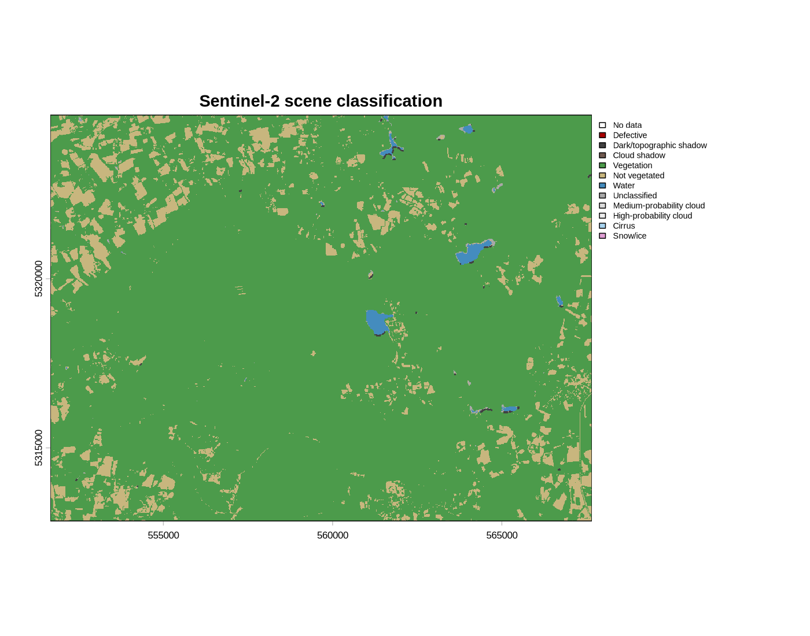
Retained pixels
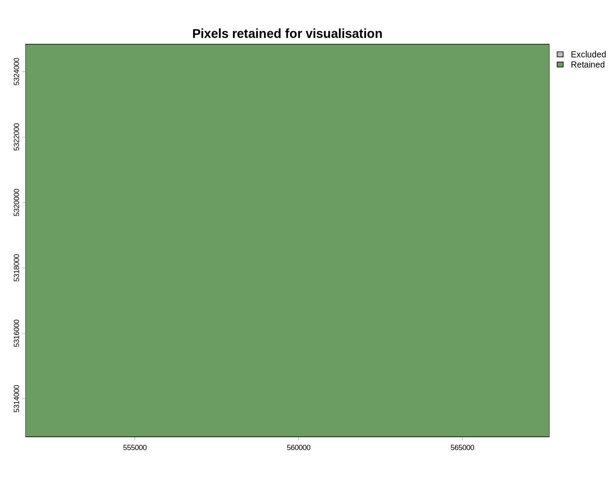
Executed R console output
layer value count 1 1 2 500 2 1 4 431616 3 1 5 44920 4 1 6 2339 5 1 7 625 retained_cells total_cells 1 480000 480000
SCL is a categorical quality layer, not a land-cover map validated for this exercise. The mask is a useful first filter and can still miss haze or misclassify some surfaces. Class 2 (dark/topographic-shadow pixels) and class 7 (unclassified pixels) are retained explicitly. Nearest-neighbour was used when preparing this categorical layer; interpolating class codes would be meaningless. In this chosen crop all cells are retained; the scene-wide cloud percentage describes a much larger area.
7.3 · Inspect the band histogram and numerical distribution
Read every valid B01 value in the cropped, quality-masked image, rather than relying on the default plot sampling. Compare the histogram with the numerical quartiles.
R code
b01_values <- values(sentinel_clean$B01, mat = FALSE)
b01_values <- b01_values[is.finite(b01_values)]
print(summary(b01_values))
cutoffs <- quantile(b01_values, probs = c(0.05, 0.95))
print(cutoffs)
hist(b01_values, breaks = 100, col = "#9aa8a2", xlab = "B01 surface reflectance",
ylab = "Number of cells", main = "B01 before contrast stretch")
abline(v = cutoffs, col = "#b14532", lty = 2, lwd = 2)
legend("topright", legend = "5% and 95% quantiles", col = "#b14532", lty = 2, bty = "n")Why these functions? · official R help
abline()— Draw the lower and upper contrast cutoffs as dashed vertical lines. In R:help("abline", package = "graphics")c()— Collect options, colours, labels and terrain-index names. In R:help("c", package = "base")hist()— Show the actual distribution of valid reflectance or stretched display values. In R:help("hist", package = "graphics")is.finite()— Remove missing and non-finite values before the exact histogram and quantile calculations. In R:help("is.finite", package = "base")legend()— Explain the percentile cutoff lines on the B01 histogram. In R:help("legend", package = "graphics")print()— Display numerical output beneath the corresponding code. In R:help("print", package = "base")quantile()— Calculate the 5th and 95th percentile cutoffs for the displayed histogram. In R:help("quantile", package = "stats")summary()— Report the full B01 value distribution without a sampled raster summary. In R:help("summary", package = "base")values()— Read all cells for the histogram, rather than a default plotting sample. In R:help("values", package = "terra")
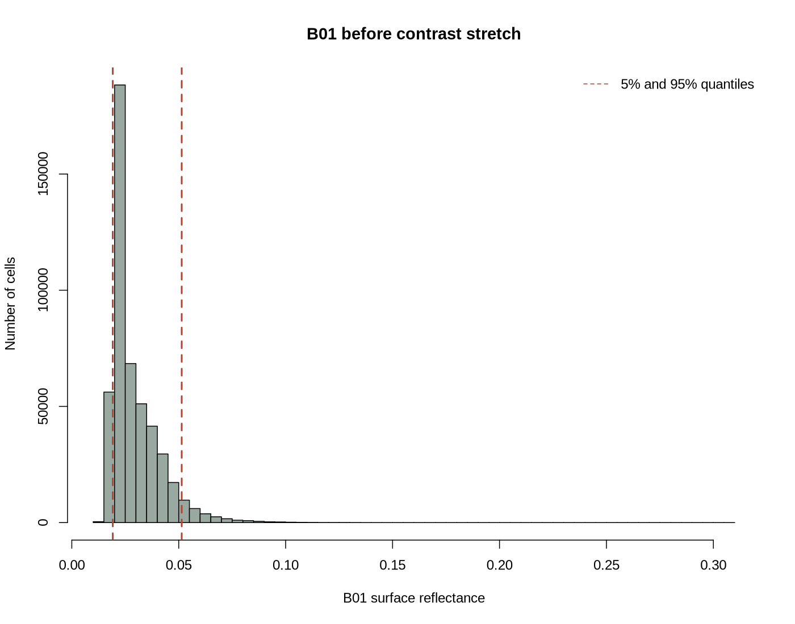
Executed R console output
Min. 1st Qu. Median Mean 3rd Qu. Max.
0.01210 0.02120 0.02473 0.02932 0.03454 0.30830
5% 95%
0.01916667 0.05140000
Bright extremes can occupy much of a linear grayscale while most cells fall in a narrow range. The dashed lines show the chosen display cutoffs. Reflectance is dimensionless; it is not the arbitrary 0–1000 display scale used in the next step. Negative or above-one reflectance values can occur in processed products and are not automatically clipped here.
7.3 · Stretch the contrast and compare before and after
Stretch each band independently between its 5th and 95th percentiles, saturating the tails and mapping the display values to 0–1000.
R code
sentinel_str <- stretch(sentinel_clean, minq = 0.05, maxq = 0.95, minv = 0, maxv = 1000,
maxcell = ncell(sentinel_clean), bylayer = TRUE)
print(global(sentinel_str, c("min", "max"), na.rm = TRUE))
plot(sentinel_clean$B01, col = gray.colors(100, 0, 1), main = "Before stretch: B01 reflectance")
plot(sentinel_str$B01, col = gray.colors(100, 0, 1), range = c(0, 1000),
main = "After 5–95% stretch: B01 display values")
stretched_values <- values(sentinel_str$B01, mat = FALSE)
stretched_values <- stretched_values[is.finite(stretched_values)]
hist(stretched_values, breaks = 100, col = "#6b9482", xlab = "Display value (0–1000)",
ylab = "Number of cells", main = "B01 after contrast stretch")Why these functions? · official R help
c()— Collect options, colours, labels and terrain-index names. In R:help("c", package = "base")global()— Summarise raster values and quantify differences between grids. In R:help("global", package = "terra")gray.colors()— Map simulated illumination to a grayscale from dark to light. In R:help("gray.colors", package = "grDevices")hist()— Show the actual distribution of valid reflectance or stretched display values. In R:help("hist", package = "graphics")is.finite()— Remove missing and non-finite values before the exact histogram and quantile calculations. In R:help("is.finite", package = "base")ncell()— Count target pixels and request full-cell quantiles for this compact exercise. In R:help("ncell", package = "terra")plot()— Map reflectance, display intensity or labelled quality categories with the appropriate legend. In R:help("plot", package = "terra")print()— Display numerical output beneath the corresponding code. In R:help("print", package = "base")stretch()— Map each band's quantile interval to a display range while saturating its extreme tails. In R:help("stretch", package = "terra")values()— Read all cells for the histogram, rather than a default plotting sample. In R:help("values", package = "terra")
Before stretch
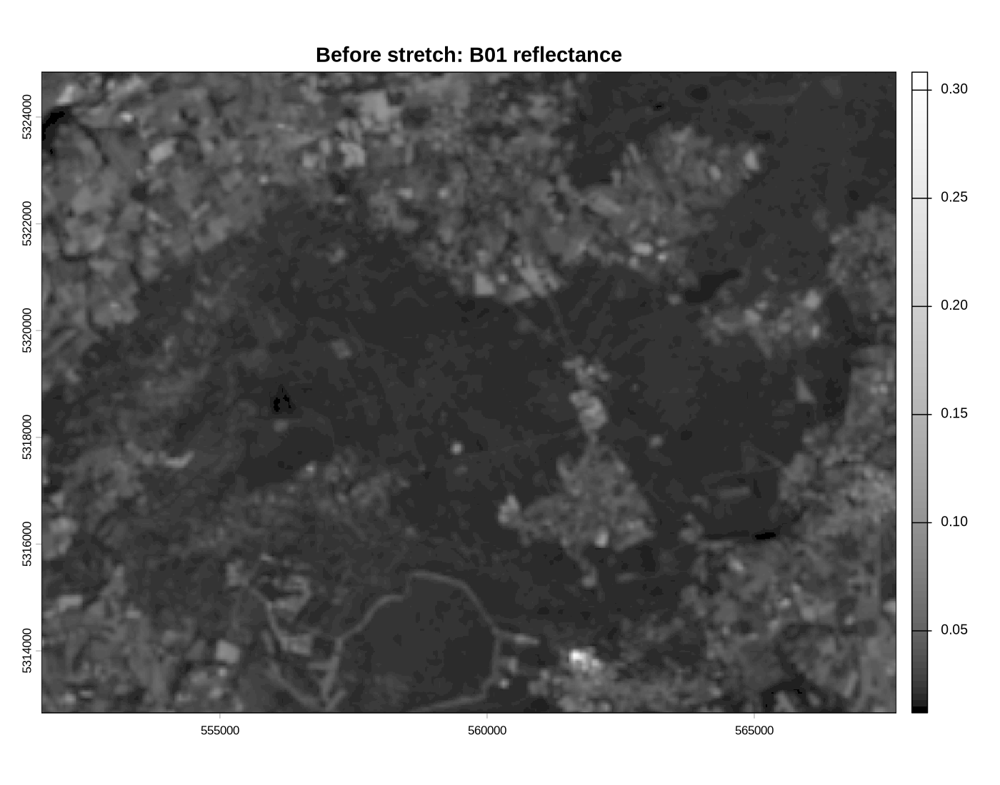
After stretch
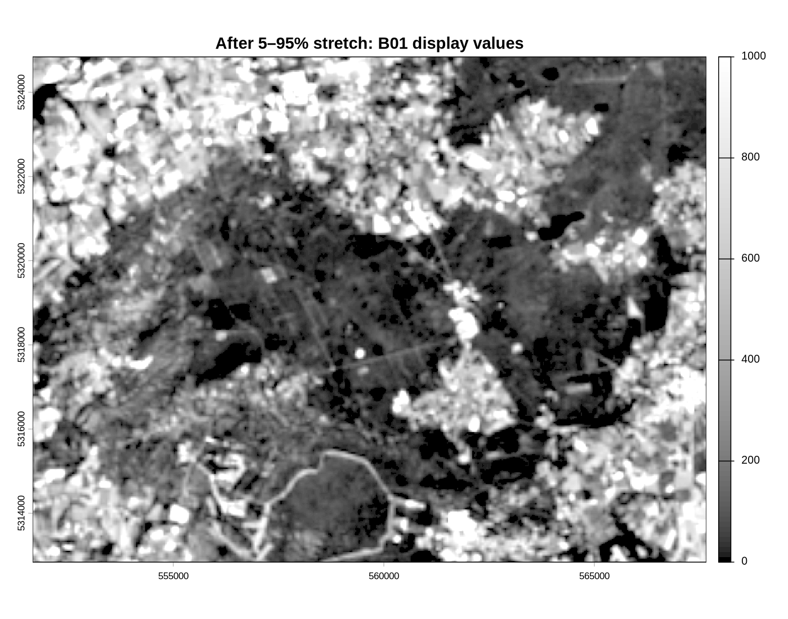
Stretched histogram
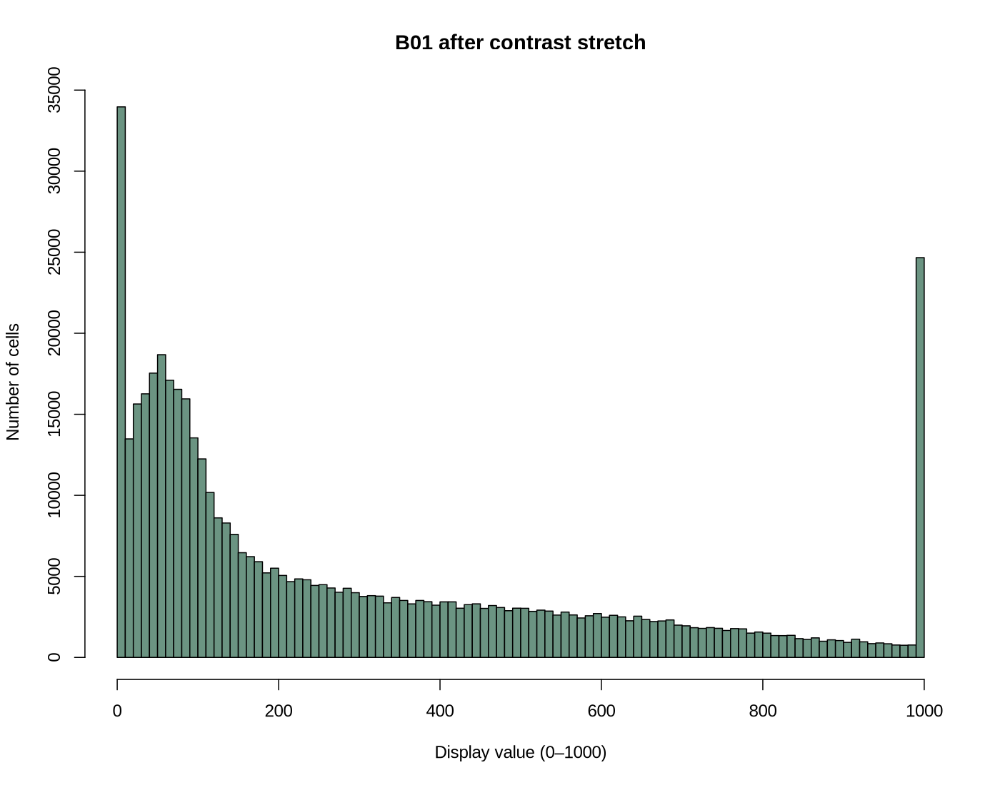
Executed R console output
min max B01 0 1000 B02 0 1000 B03 0 1000 B04 0 1000 B05 0 1000 B06 0 1000 B07 0 1000 B11 0 1000 B12 0 1000 B8A 0 1000
The original reflectance raster remains unchanged. Values below the lower cutoff become 0 and values above the upper cutoff become 1000. The stretched raster is for display; do not use it to calculate physical reflectance indices or compare absolute reflectance between scenes. Every RGB plot below explicitly sets scale = 1000 to match this display range.
Your turn · Compare different contrast cutoffs
Repeat a true-colour display with 0–100%, 2–98% and 5–95% percentile limits. Keep the same scene, crop and RGB assignment.
R code
stretch_options <- list(c(0, 1), c(0.02, 0.98), c(0.05, 0.95))
for (limits in stretch_options) {
display <- stretch(sentinel_clean, minq = limits[1], maxq = limits[2], maxv = 1000,
maxcell = ncell(sentinel_clean), bylayer = TRUE)
channels <- match(c("B04", "B03", "B02"), names(display))
plotRGB(display, r = channels[1], g = channels[2], b = channels[3], scale = 1000,
smooth = FALSE, axes = TRUE, mar = c(3, 3, 4, 1),
main = paste("True colour: quantiles", paste(limits, collapse = " to ")))
}Why these functions? · official R help
c()— Collect options, colours, labels and terrain-index names. In R:help("c", package = "base")list()— Keep hillshades together under descriptive names. In R:help("list", package = "base")match()— Order input files and assign RGB channels by explicit band name. In R:help("match", package = "base")names()— Select the individual terrain-index layers by name. In R:help("names", package = "base")ncell()— Count target pixels and request full-cell quantiles for this compact exercise. In R:help("ncell", package = "terra")paste()— Build figure titles from the selected method or lighting direction. In R:help("paste", package = "base")plotRGB()— Assign selected spectral bands to the screen red/green/blue channels with an explicit 0–1000 scale. In R:help("plotRGB", package = "terra")stretch()— Map each band's quantile interval to a display range while saturating its extreme tails. In R:help("stretch", package = "terra")
0–100%
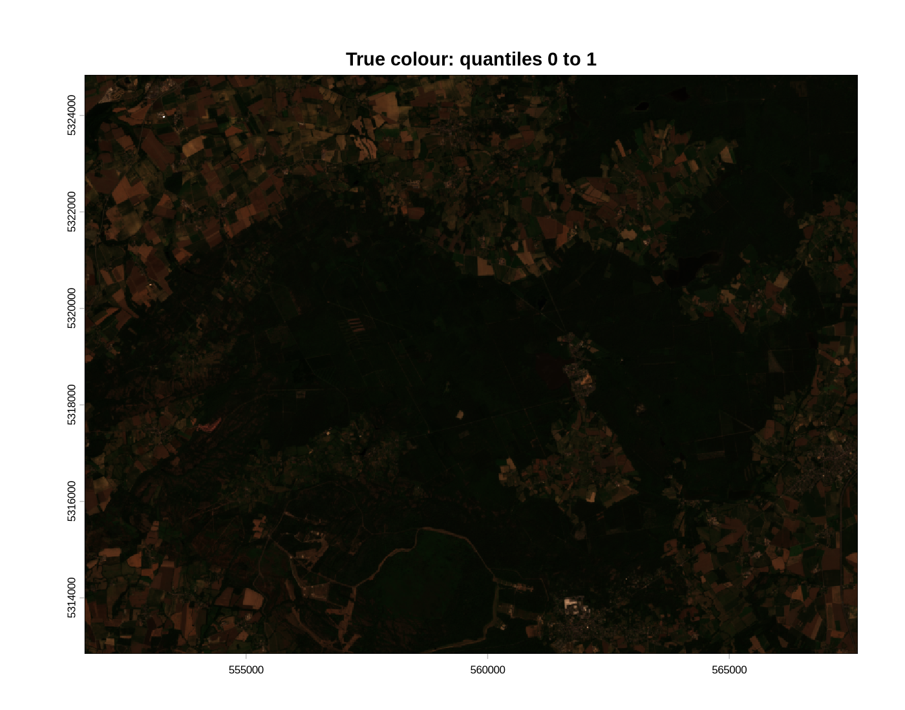
2–98%
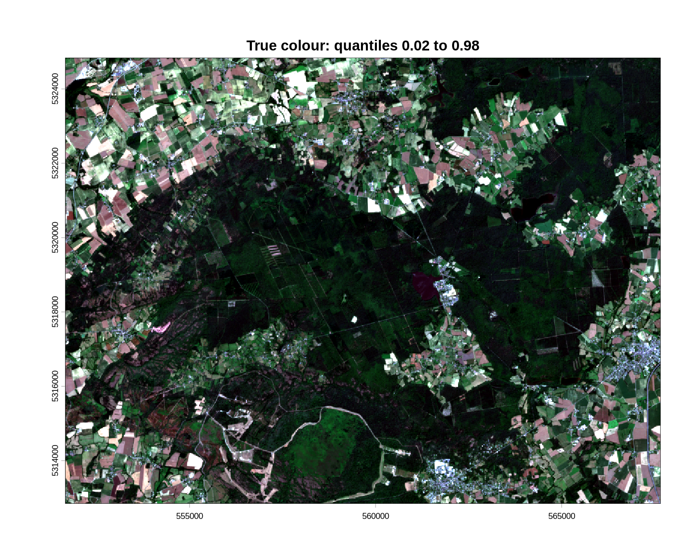
5–95%
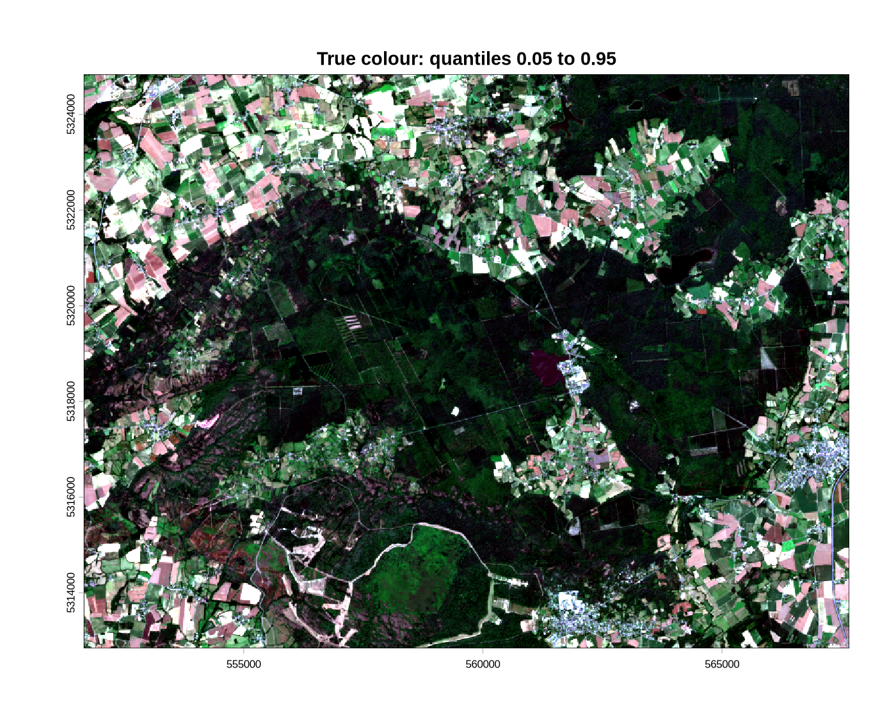
Executed R console output
More aggressive tail clipping can improve contrast but sacrifices differences among the darkest and brightest pixels. The three images represent the same ground on the same date: apparent colour changes come from the display transformation, not environmental change.
Your turn · Explore the other spectral bands
Inspect all ten bands after the same per-band 5–95% stretch. Each grayscale has the same display range, but a different reflectance-to-display transformation.
R code
for (band in names(sentinel_str)) {
plot(sentinel_str[[band]], col = gray.colors(100, 0, 1), range = c(0, 1000),
main = paste(band, "- stretched display values (0–1000)"))
}Why these functions? · official R help
c()— Collect options, colours, labels and terrain-index names. In R:help("c", package = "base")gray.colors()— Map simulated illumination to a grayscale from dark to light. In R:help("gray.colors", package = "grDevices")names()— Select the individual terrain-index layers by name. In R:help("names", package = "base")paste()— Build figure titles from the selected method or lighting direction. In R:help("paste", package = "base")plot()— Map reflectance, display intensity or labelled quality categories with the appropriate legend. In R:help("plot", package = "terra")
B01
R code for this view
plot(sentinel_str[["B01"]], col = gray.colors(100, 0, 1), range = c(0, 1000))B02
R code for this view
plot(sentinel_str[["B02"]], col = gray.colors(100, 0, 1), range = c(0, 1000))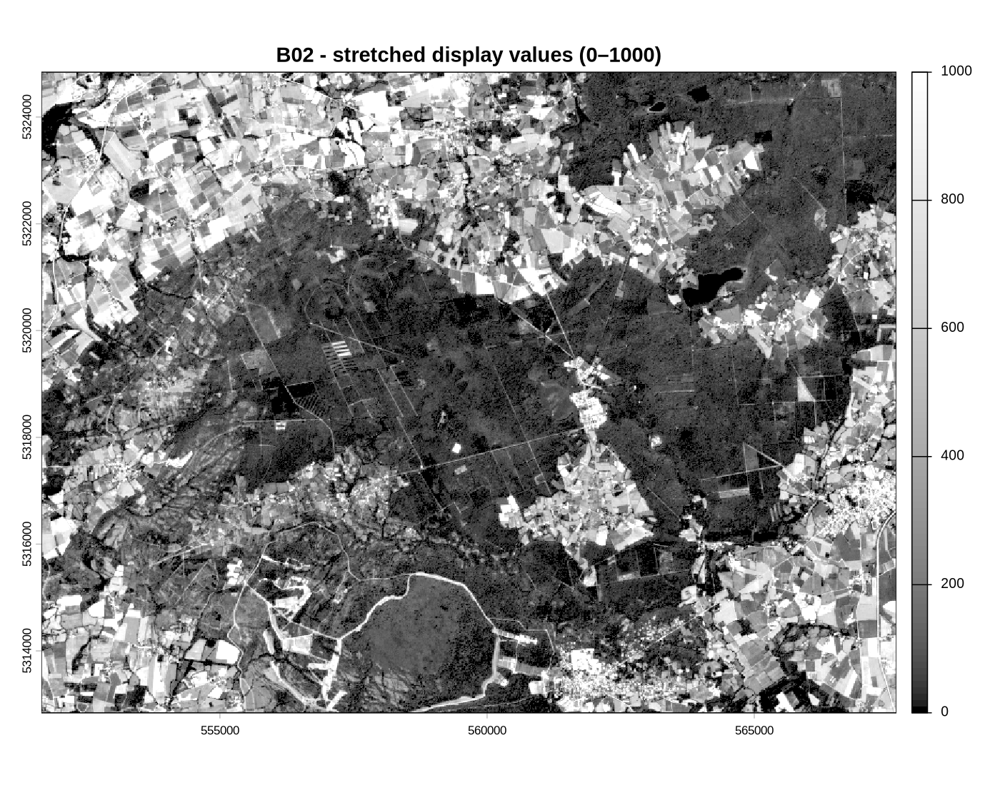
B03
R code for this view
plot(sentinel_str[["B03"]], col = gray.colors(100, 0, 1), range = c(0, 1000))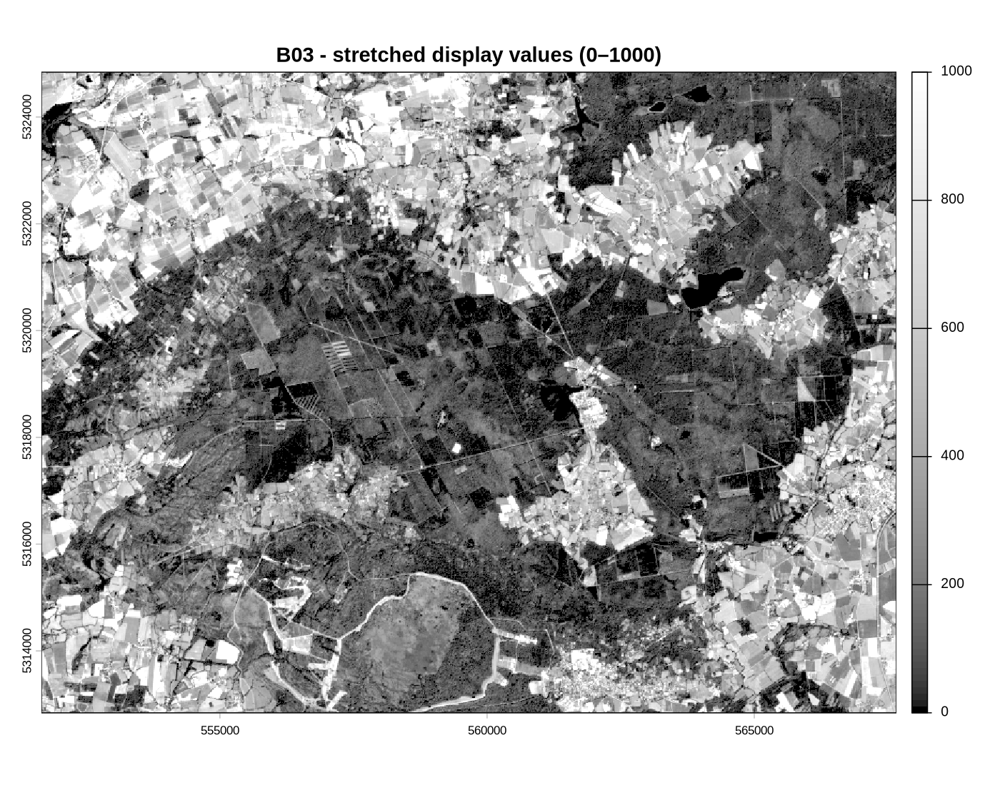
B04
R code for this view
plot(sentinel_str[["B04"]], col = gray.colors(100, 0, 1), range = c(0, 1000))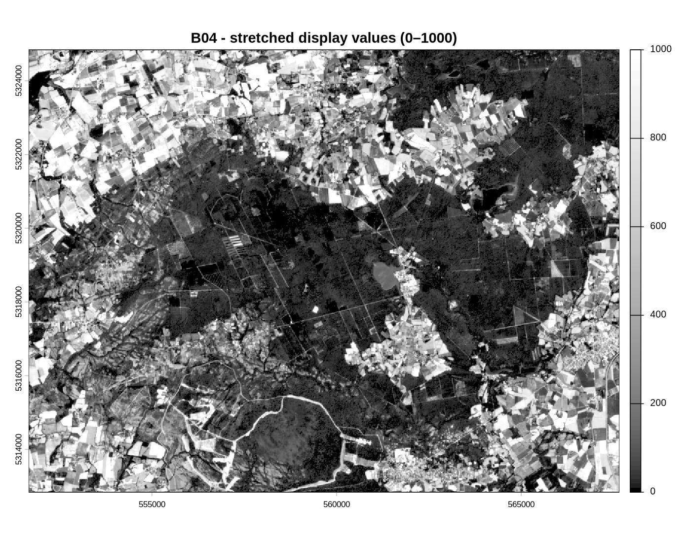
B05
R code for this view
plot(sentinel_str[["B05"]], col = gray.colors(100, 0, 1), range = c(0, 1000))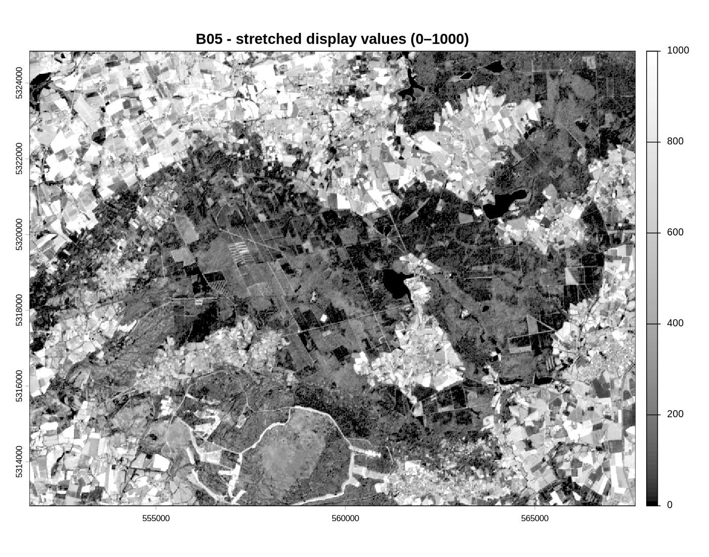
B06
R code for this view
plot(sentinel_str[["B06"]], col = gray.colors(100, 0, 1), range = c(0, 1000))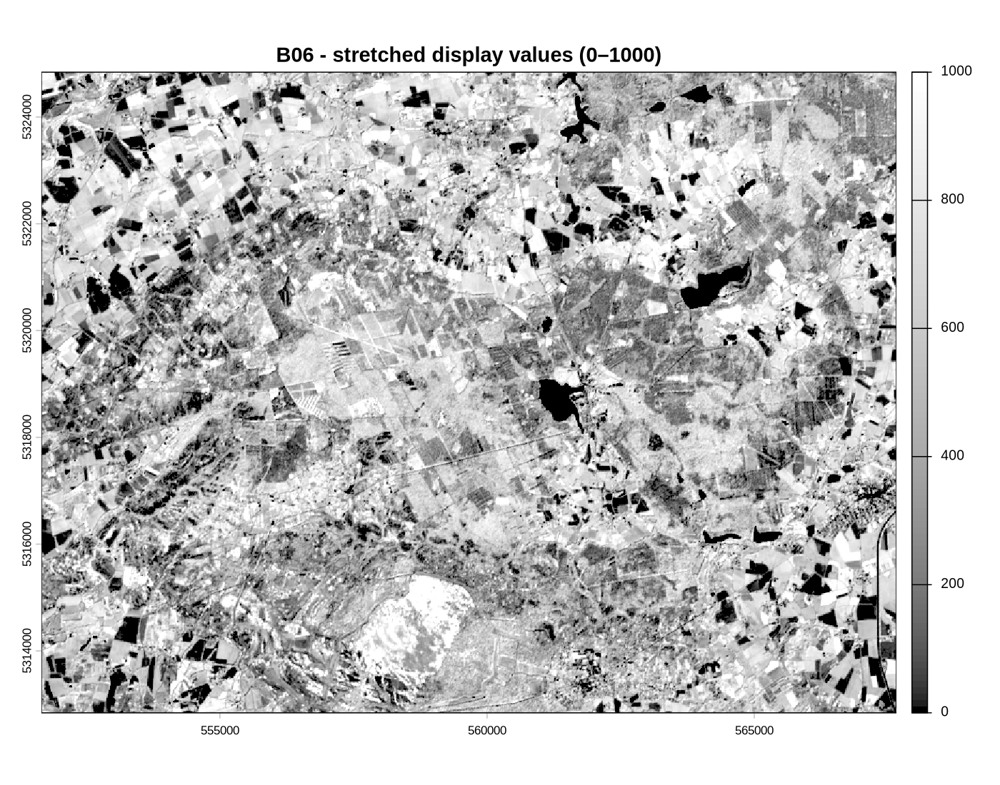
B07
R code for this view
plot(sentinel_str[["B07"]], col = gray.colors(100, 0, 1), range = c(0, 1000))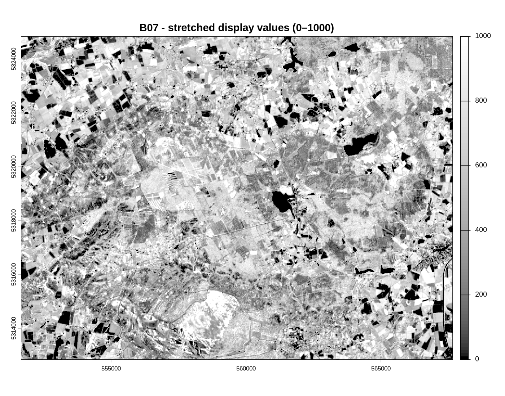
B11
R code for this view
plot(sentinel_str[["B11"]], col = gray.colors(100, 0, 1), range = c(0, 1000))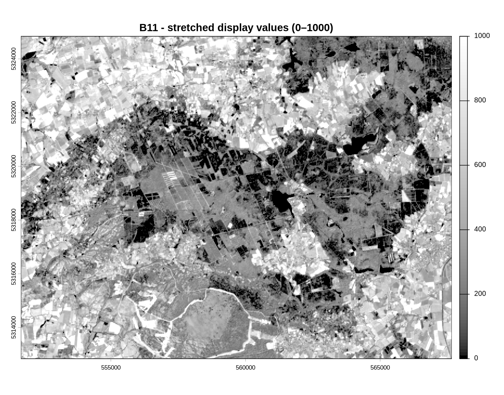
B12
R code for this view
plot(sentinel_str[["B12"]], col = gray.colors(100, 0, 1), range = c(0, 1000))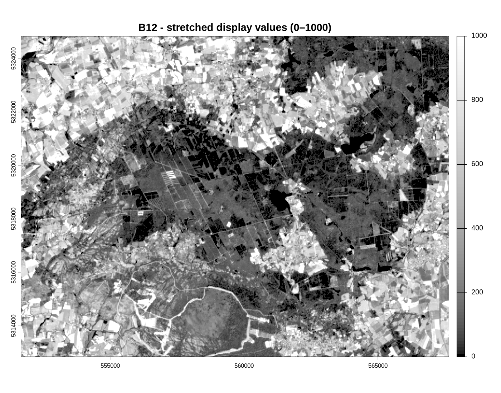
B8A
R code for this view
plot(sentinel_str[["B8A"]], col = gray.colors(100, 0, 1), range = c(0, 1000))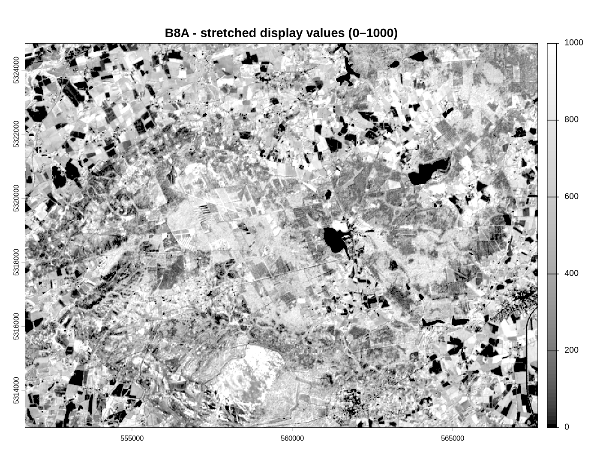
Executed R console output
This gallery helps relate spatial patterns to wavelength. Because each band was stretched independently, equal display brightness in two different bands does not mean equal physical reflectance. Use the original reflectance bands for quantitative comparisons.
7.4 · Create the four composite images from the chapter
Assign spectral bands to the red, green and blue display channels by name. This avoids relying on their numerical position in the multilayer object.
R code
composites <- list(
True_colour = c("B04", "B03", "B02"),
Vegetation_false_colour = c("B8A", "B04", "B03"),
SWIR_NIR_red = c("B12", "B8A", "B04"),
SWIR_comparison = c("B12", "B11", "B02")
)
for (view in names(composites)) {
channels <- match(composites[[view]], names(sentinel_str))
stopifnot(!anyNA(channels))
plotRGB(sentinel_str, r = channels[1], g = channels[2], b = channels[3], scale = 1000,
smooth = FALSE, axes = TRUE, mar = c(3, 3, 4, 1),
main = paste(view, "- R/G/B:", paste(composites[[view]], collapse = "/")))
}
print(composites)Why these functions? · official R help
anyNA()— Stop if an RGB band name has no matching layer. In R:help("anyNA", package = "base")c()— Collect options, colours, labels and terrain-index names. In R:help("c", package = "base")list()— Keep hillshades together under descriptive names. In R:help("list", package = "base")match()— Order input files and assign RGB channels by explicit band name. In R:help("match", package = "base")names()— Select the individual terrain-index layers by name. In R:help("names", package = "base")paste()— Build figure titles from the selected method or lighting direction. In R:help("paste", package = "base")plotRGB()— Assign selected spectral bands to the screen red/green/blue channels with an explicit 0–1000 scale. In R:help("plotRGB", package = "terra")print()— Display numerical output beneath the corresponding code. In R:help("print", package = "base")stopifnot()— Stop execution if a grid or export verification fails. In R:help("stopifnot", package = "base")
B04–B03–B02
R code for this view
channels <- match(c("B04", "B03", "B02"), names(sentinel_str))
plotRGB(sentinel_str, r = channels[1], g = channels[2], b = channels[3], scale = 1000,
smooth = FALSE, axes = TRUE, mar = c(3, 3, 4, 1))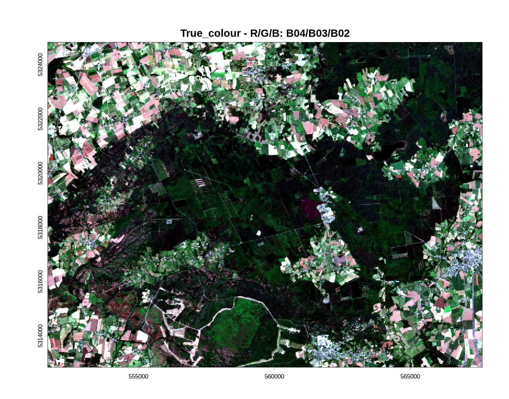
B8A–B04–B03
R code for this view
channels <- match(c("B8A", "B04", "B03"), names(sentinel_str))
plotRGB(sentinel_str, r = channels[1], g = channels[2], b = channels[3], scale = 1000,
smooth = FALSE, axes = TRUE, mar = c(3, 3, 4, 1))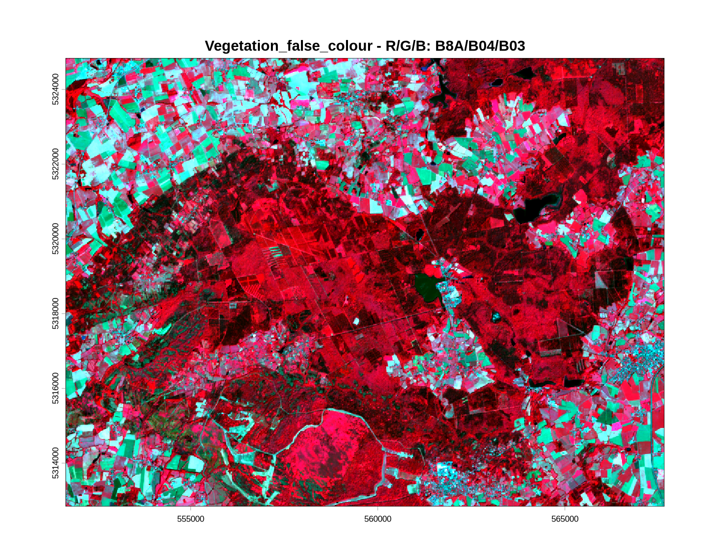
B12–B8A–B04
R code for this view
channels <- match(c("B12", "B8A", "B04"), names(sentinel_str))
plotRGB(sentinel_str, r = channels[1], g = channels[2], b = channels[3], scale = 1000,
smooth = FALSE, axes = TRUE, mar = c(3, 3, 4, 1))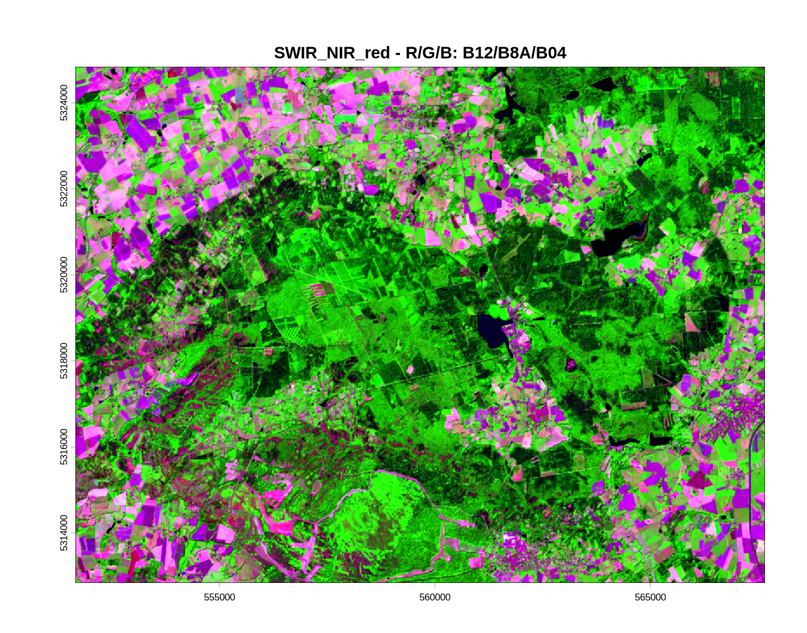
B12–B11–B02
R code for this view
channels <- match(c("B12", "B11", "B02"), names(sentinel_str))
plotRGB(sentinel_str, r = channels[1], g = channels[2], b = channels[3], scale = 1000,
smooth = FALSE, axes = TRUE, mar = c(3, 3, 4, 1))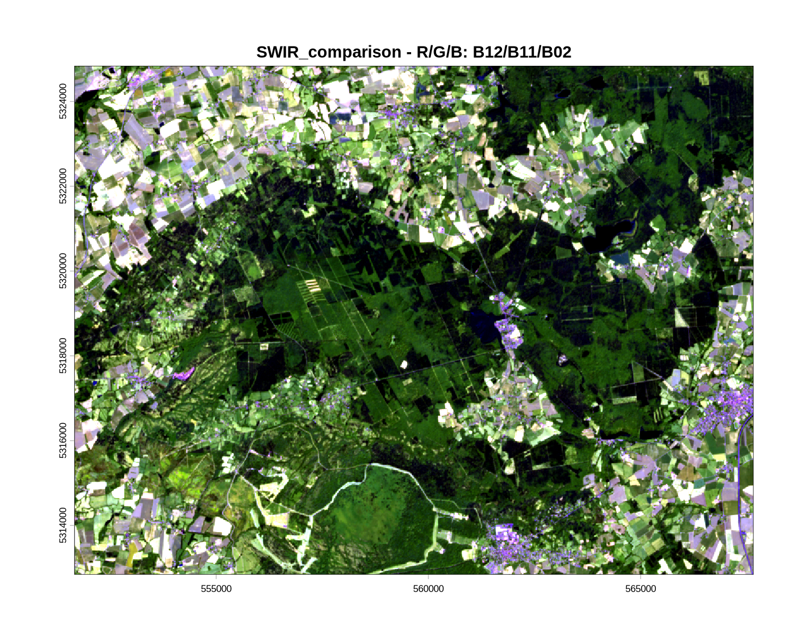
Executed R console output
$True_colour [1] "B04" "B03" "B02" $Vegetation_false_colour [1] "B8A" "B04" "B03" $SWIR_NIR_red [1] "B12" "B8A" "B04" $SWIR_comparison [1] "B12" "B11" "B02"
B04/B03/B02 is a stretched true-colour view. B8A/B04/B03 places near-infrared in the red channel, so much actively reflecting vegetation appears red. The two SWIR compositions emphasize other spectral contrasts related to surfaces and moisture, but colour alone is not a validated soil, crop or water classification. RGB channels are display assignments; their band mapping replaces a single numerical colour-bar legend.
Export · Export reflectance and display data separately
Save the quality-masked physical reflectance and the stretched display stack under distinct filenames. Reopen the reflectance raster to check its grid and numerical precision.
R code
dir.create("outputs/module-07", recursive = TRUE, showWarnings = FALSE)
writeRaster(sentinel_clean, "outputs/module-07/sentinel2-reflectance-20m.tif", overwrite = TRUE)
writeRaster(sentinel_str, "outputs/module-07/sentinel2-display-0-1000.tif", overwrite = TRUE)
writeRaster(clear, "outputs/module-07/retained-pixels.tif", overwrite = TRUE)
reopened <- rast("outputs/module-07/sentinel2-reflectance-20m.tif")
stopifnot(compareGeom(reopened, sentinel_clean))
error <- global(abs(reopened - sentinel_clean), "max", na.rm = TRUE)
print(error)
stopifnot(all(error[, 1] < 0.000001))
plot(reopened$B04, col = gray.colors(100, 0, 1), main = "Reopened red band: physical reflectance")Why these functions? · official R help
abs()— Turn signed differences into absolute differences for error checks. In R:help("abs", package = "base")all()— Require every geometry and export check to pass. In R:help("all", package = "base")compareGeom()— Verify that the reconstructed or exported grid matches the reference. In R:help("compareGeom", package = "terra")dir.create()— Create the output directory before exporting rasters. In R:help("dir.create", package = "base")global()— Summarise raster values and quantify differences between grids. In R:help("global", package = "terra")gray.colors()— Map simulated illumination to a grayscale from dark to light. In R:help("gray.colors", package = "grDevices")plot()— Map reflectance, display intensity or labelled quality categories with the appropriate legend. In R:help("plot", package = "terra")print()— Display numerical output beneath the corresponding code. In R:help("print", package = "base")rast()— Read one physical-reflectance band or combine a list into a ten-layer raster. In R:help("rast", package = "terra")stopifnot()— Stop execution if a grid or export verification fails. In R:help("stopifnot", package = "base")writeRaster()— Save cell values, grid geometry and CRS as reusable GeoTIFF files. In R:help("writeRaster", package = "terra")
Executed R console output
max B01 0 B02 0 B03 0 B04 0 B05 0 B06 0 B07 0 B11 0 B12 0 B8A 0
writeRaster() saves raster values, the spatial grid and the CRS; a PNG only records a rendered picture. Both exported stacks have the same geometry but different numerical meanings. The physical-reflectance file supports later quantitative analysis, while the display file reproduces these visual composites.
Practice
Find the forest, surrounding fields and small water bodies in the true-colour view, then compare them in B8A/B04/B03. Change the contrast cutoffs and explain which differences arise from the display rather than changes in surface reflectance.
Expected reasoning
Band choice changes the spectral information assigned to screen colours. A near-infrared red channel makes many vegetated areas appear red; water often remains dark. Stretch changes contrast and saturates tails. These visual clues do not establish a validated land-cover classification or prove the absence of all atmospheric effects.
Official resources: Sentinel-2 spectral bands · Level-2A processing and scene classification · Copernicus Data Space · RGB plotting.